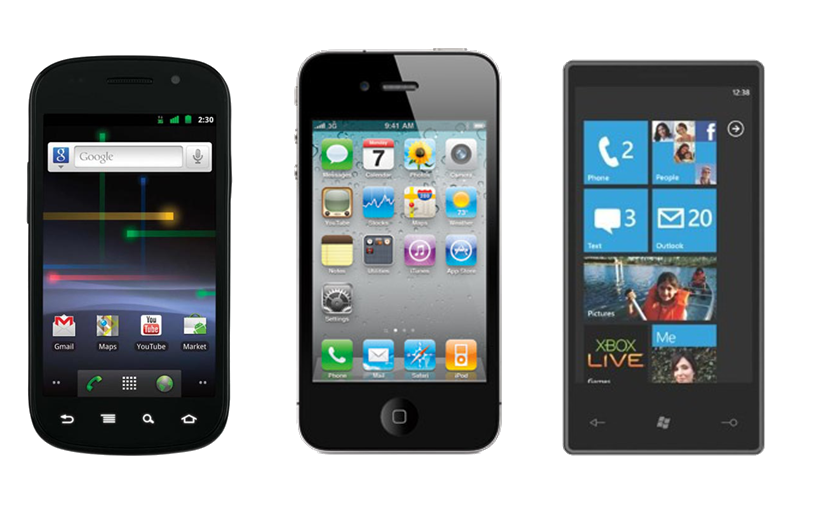

Home
Previous
Next
End
#0
Follow?
Hide this bar
Connecting People and Devices
Ben Dodson
bjdodson@stanford.edu
7.26.2011
"Three Screens and a Cloud."
"
Three
Four Screens and a Cloud."
We like our phones.

We like our other devices, too.
Let's use them for what they're good at.
Tool #1: NFC
...with a twist
Tool #2: Junction